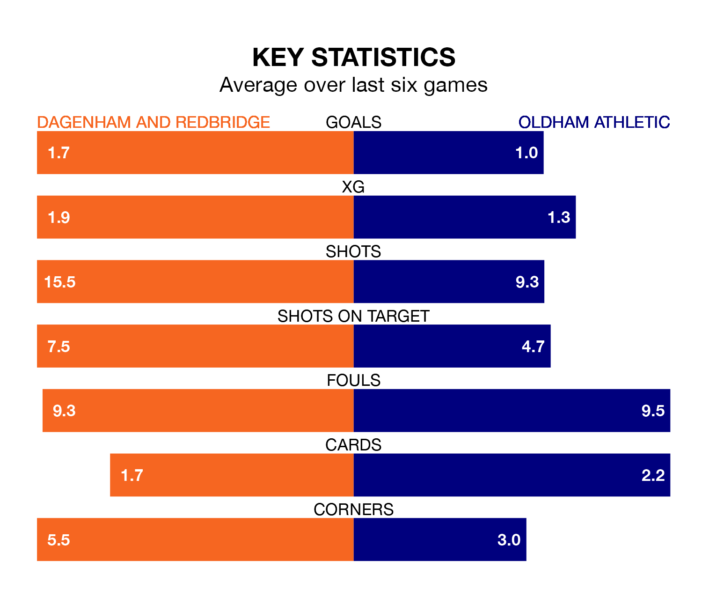

Oldham Athletic travel to Dagenham and Redbridge on Saturday in the National League.
The visitors come into the game on the back of a draw in their last match, having tied with Chesterfield 2-2 at home, with goals from Danny Gardner and James Norwood.
Dagenham & Redbridge, meanwhile, won their last match, 4-1 against Maidenhead United, with their goals scored by Joshua David Rees, Lewis Page, Harry Phipps and Ryan Hill.
With 58 goals in 40 games so far this season, Dagenham & Redbridge are scoring at below the league average rate with 1.4 goals per game. But they are conceding fewer than average too, letting in 54 goals at a rate of 1.4 per game.
Oldham, meanwhile, are average scorers, with 1.5 goals per game. They have conceded 1.3 goals per game.
The home team are in mixed form in the National League, with two wins and two draws from their last six games.
With a win and three draws over that period, Athletic's form is slightly worse – they have taken six points from 18, compared to Dagenham & Redbridge's eight.
In the last three years, Dagenham & Redbridge and Oldham have played each other on three occasions. Oldham won one of them and they drew the other.
Their last meeting was on October 7, when they played out a 1-1 draw.
The Latics are 10th in the table after 39 games, of which they have won 15 and drawn 14, earning 59 points.
Dagenham & Redbridge are two places behind the visitors in 12th, with 13 wins and 10 draws putting them on 49 points.
Updated: 10:19 (UTC), 22/03/24